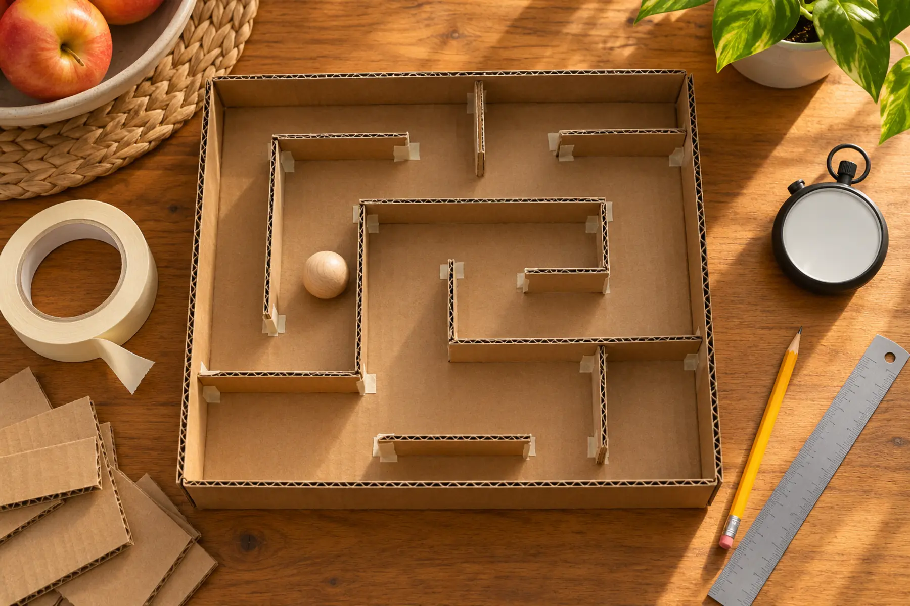

0–5 minutes
Choose a shallow box lid, one large ball and a finish cup. Draw only the start and finish.
AT HOME · 30 MINUTES · AGES 7+ · NO-SPEND BUILD
Don’t decorate first. Build one path, make one fair test and change one thing at a time. The wobble is the lesson.

A maze becomes an engineering activity when the child can explain the goal, test the same way twice and change one variable. The goal is not a Pinterest-perfect board. It is a ball that can travel from start to finish when the tray is tilted with two hands.
Skip hot glue. It speeds adult construction but removes the child’s ability to revise quickly and adds burn risk. Tape is the feature: walls can move after evidence.
Start with fewer walls than the child wants. A maze full of tiny corridors often becomes a stuck-ball display. One clean loop, one decision and one dead end is enough for the first test.
Mark a start box. Put the ball in the same orientation, place the tray flat, then count “three, two, one.” One player tilts; one observer records. Set a maximum of 60 seconds. If the ball leaves the tray or gets trapped, record that outcome instead of pretending the trial did not count.
Use a six-row table: trial number, finish/stuck/out, time, location of trouble, one observation and next change. This is the same evidence habit used in the paper bridge load test: observation comes before redesign.
Keep snacks off the build table so tape, cardboard dust and the craft ball do not mix with food. Work on the floor only if the ball cannot roll under furniture or into a younger sibling’s space. Count all balls before and after. Flatten unusable scraps according to local recycling rules; tape-heavy pieces may belong in trash.
Ten-minute paper version: draw a maze on paper and move a coin-sized cardboard disk with one finger. Low-energy build: adult tapes four walls while the child predicts the fastest route. Movement version: make a life-size route with painter’s tape only where the floor finish and manufacturer permit it; walk heel-to-toe rather than running. Next-day extension: photograph the first and second layouts privately and ask the child to annotate the one change.
For a calmer backup, use the 45-minute library night. For another controlled build, try the flashlight shadow lab.
Skip loose balls when any child in the home mouths objects or cannot follow the storage rule. Skip cutting when an adult cannot directly supervise. Skip the tray version for a child who becomes distressed by repeated failure; use the paper path and cooperative narration instead. Stop when the structure frays into sharp edges or the ball cannot be accounted for.
MAKE THE DAY COUNT
Build the plan your family can finish well, then leave enough energy for the next part of the day.
More family plans